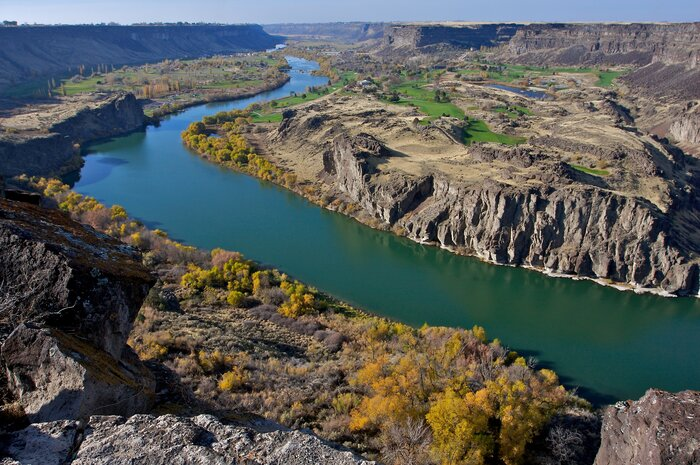
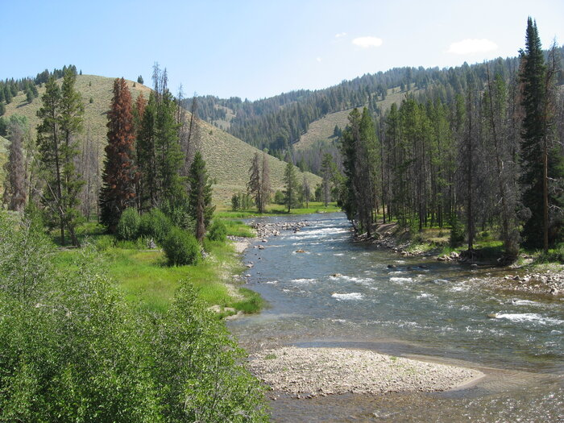
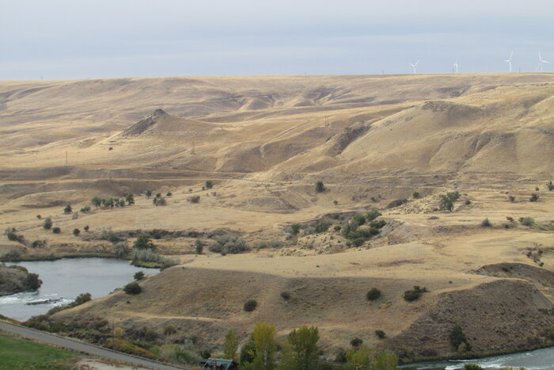

Rivers to Visit
Snake River
 A major river in the Pacifict Northwest region. With an elvevation of 109.118
This river is very exciting expierence for water refting. The best way to experience Snake River is trough a multi-day water rafting trip.
Salmon River
Known as the River of "No Return". The Salmon River is one of the most popular rivers located in Idaho.
It is as long as 425 miles and runs through the center of Idaho. This river can be more cahlleging that most.
Be ready for an extreme expierence.
Malad River
The Malad River is located in the inside of Gooding County. With a altitude of 4,728 ft. The Malad River is a great destination
for a more calm ride in water rafting. Enjoy an expierence with nature.